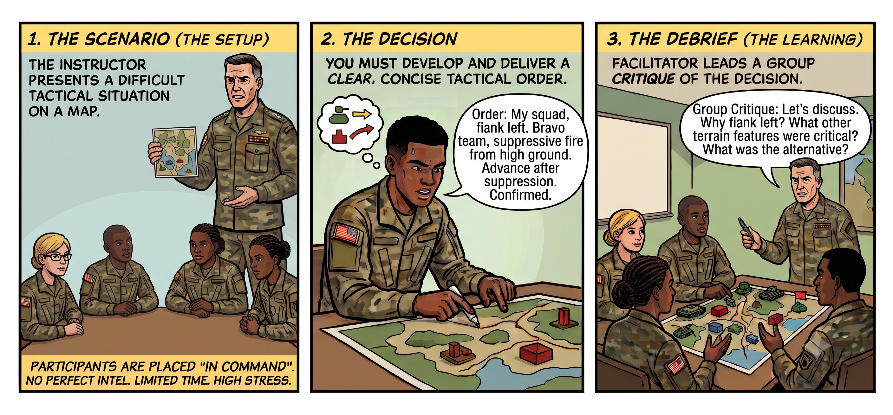

Adjudicated Decision Games (ADGs): Judgment in the Fog of Synthetic Ambiguity
Decision-forcing case studies have an enduring heritage in training to operate under ambiguity, ranging from dilemmas in the Panchatantra, Machiavelli’s field exercises, 19th century Prussian military Kriegspiel, to modern business case studies and military Tactical Decision Games (TDGs). A standard TDG sets up a tight operational dilemma: a clear role, incomplete or conflicting field reports, and an objective with an urgent deadline. There is no clever trick or secret answer; it’s about maintaining one’s wits and eking out advantages while avoiding attrition, succumbing neither to haste nor paralysis.

The linchpin of a TDG is an experienced facilitator who can simulate causal reality, enforce authentic friction, and evaluate reasoning rather than luck -- which makes these exercises hard to scale. While many professions require such judgment, I suspect this is why few train it systematically. We teach domain knowledge through textbooks and lectures, but leave for a trial-by-fire the ability to execute under ambiguity, high stakes, and a ticking clock. The TDG experience helps build recognition-primed judgement for exactly such scenarios.
Modern LLMs are interesting candidates for good facilitators; they carry a broad level of intelligence and can be supplemented with the necessary context for any specific game situation. I certainly don’t claim to be the first to connect generative models to interactive scenarios -- the intuition is obvious in hindsight, and a cursory search throws up several text RPGs and scenario simulators. But I’ve been playing with this concept independent of those other attempts, and I want to share my learnings on what drives the game, and the mechanics to operationalize it well.
Game mechanics
Real ambiguity isn’t just randomness; it’s the Knightian uncertainty of an unknown situation with its own internal logic. A few design principles help create that context:
- High orientation, low strategic certainty: The player should be abundantly clear on basic operational ontology: their mandate, authority, and available tools. All the uncertainty must reside strictly in interpreting ambiguous signals and choosing an intervention. Games venturing into strategic decision-making could of course involve ambiguity in the ontology as well.
- Coupled trade-offs: Useful probes typically carry operational costs -- be it asking for an extra blood culture, or taking a server offline to inspect logs -- and efforts to reduce ambiguity might take up precious time from quick action.
- Time pressure: The clock is an active adversary; asking too many questions or hesitating eats into the time budget. A persistent, visible Heads-Up Display (HUD) grounds the player in their dwindling resources and pending commitments.
- A review that emphasizes process over outcome: A terrible, reckless guess can get lucky and a good decision can fail due to unresolvable ambiguity. The post-game evaluation inspects the coherence of diagnostic inquiry, and its rationale against what was knowable at the time, rather than grading against a hidden answer.
Architecture
Just like the quality of a TDG is determined by how realistic the facilitator manages to make the player experience, the ADG experience is ultimately characterized by how well grounded the game components are, for the adjudicator to meaningfully enforce the facts, constraints, and causal rules. Bad grounding means that a player’s learning experience overfits to hallucinated behavior, rather than learning the kind of decision-making that would be useful in the real world.
When implementing such a game with LLMs, it helps to split the many responsibilities held by the facilitator into different agents or personas, each with its own context. Without strong boundaries, an LLM is prone to make the narration structure self-justifying by inventing just-so consequences and explanations. Further, it might be preferable to ground the facts that must not change (true underlying situation, rules and behaviors for the world and its entities) outside the model’s context. That could be model weights (eg. using a world model fine tuned for a scenario), or else have both be written to files on disk, before the start of each game. A good game design would mean that the generated facts never need to be redrafted as the game proceeds. The adjudicator might need to derive responses from that foundation (especially in case of creative questions) but should never need to patch the foundations or step outside it.
- Game State: A persistent record of the situation, including facts hidden from the player. Storing it explicitly keeps established facts from drifting as the conversation grows. In simpler situations where the ground truth world state doesn’t need to evolve (single decision instead of sequential actions), it could just as well be written to a text file on disk, to ensure that it doesn’t get clobbered by the entropy of the adjudicator’s context.
- Causal World Model: Determines how actions change the situation, using established rules or case evidence. An agent can apply this model, but shouldn’t freely reinvent its consequences.
- Adjudicator: The player never interacts with or has any access to the raw world state; their epistemic state evolves turn-by-turn based purely on the probes they run, the questions they ask, and the interventions they commit. The adjudicator serves to intermediate between the player and the game, and ground the player’s free-form intent against physical constraints, doctrine, and costs.
- HUD: The game output generated by the adjudicator at each turn represents the player’s perception of the situation: the goal, game-time, available resources, and knowledge of the situation.
- Coach: Reviews the player’s inquiry, reasoning, and commitment against the information available at the time, distinguishing decision quality from outcome luck.
Illustrative (synthetic) vignettes
What does this look like in practice? Below is an interactive walkthrough of four synthetic vignettes across different operational dilemmas. Use the tabs to select between scenarios, and step through each turn to observe the dynamic HUD, the player’s inquiry and commitments, the adjudicator’s constraints, and the coach’s evaluation.
A playground for humans, and then agents?
The motivation here is to create good games that force us to look into the abyss, grapple with the trade-offs, learn to make decisions and keep moving forward.
Inevitably, there is also an angle here for evaluating AI agents. Subjecting autonomous agents to ADGs could serve as a stress test for bounded reasoning, calibration, and tool choice under epistemic uncertainty. What can be used as an eval could just as well be used for automated hill-climbing i.e reinforcement learning. A note of caution, though... done naively (eg. if the acting agent, the causal world model and the adjudicating referee share the same priors) this risks running headlong into some kind of “mode collapse” or myriad forms of reward hacking. But that’s not my primary interest here so let’s skip that for a simpler focus: an engaging low-cost sparring ring to develop human cognition.
The demo, scenario engine, and case dossiers are open source on GitHub. Try a run, see if you can survive the fog, and let me know where the referee or the world break. Remember also that these pieces are very simple to fork and modify to construct your own domains and scenarios. Pair it with your world-building and have fun!